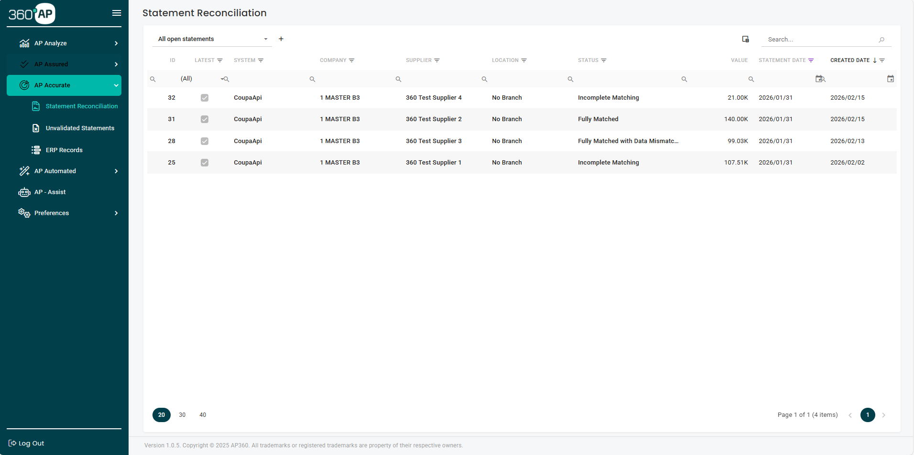

Statement reconciliation in hours, not days
Import supplier statements in any format. Match them line by line against your ERP records. Flag every discrepancy automatically. Your team handles the exceptions. AP Accurate handles the rest.
See it with your own data. Free proof of concept included.
